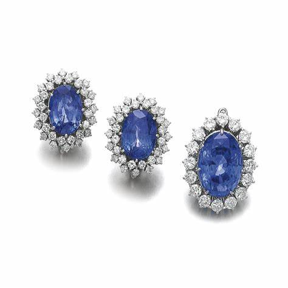
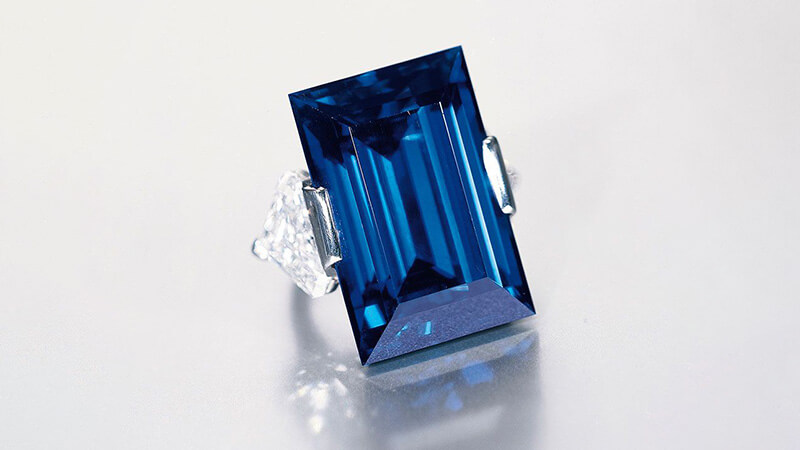

Sapphire: The Royal Blue Gemstone of Wisdom and Nobility

Chemical Formula: Al₂O₃ (Aluminum Oxide)
Color: Various (Blue, Pink, Yellow, Green, etc.)
Hardness: 9 on the Mohs scale
Crystal System: Trigonal
Localities: Sri Lanka, Myanmar, Kashmir (India), Madagascar
Common Uses: Jewelry, Decorative Items, Carvings
Sapphire is one of the most revered and sought-after gemstones in the world, renowned for its captivating blue color and rich history. A variety of the mineral corundum, sapphire can occur in almost every color of the rainbow except red (which is classified as ruby). The most iconic and valuable sapphires are a deep vivid blue, often associated with royalty, wisdom, and divine favor.
The name "sapphire" comes from the Greek word "sappheiros," meaning blue stone. Sapphires have been cherished for thousands of years, symbolizing truth, loyalty, and nobility. Sapphire is one of the four precious gemstones, along with ruby, emerald, and diamond, and is the birthstone for September, representing purity, wisdom, and faithfulness.
Formation and Types of Sapphire
Sapphires form under extreme conditions of heat and pressure in metamorphic rocks such as schist and gneiss, as well as in igneous rocks like basalt. The trace elements present during the stone's formation determine the color of the sapphire, with iron and titanium giving rise to the classic blue hue.
There are several types of sapphire, categorized by their color, origin, and quality:
Blue Sapphire
The most famous and sought-after variety, blue sapphire ranges in color from pale blue to deep vivid blue. The most valuable blue sapphires are known as "cornflower blue," a bright medium to deep blue with high saturation.
Padparadscha Sapphire

One of the rarest and most valuable types of sapphire, padparadscha sapphires are a unique pinkish-orange color named after the color of a lotus flower. They are primarily found in Sri Lanka and are highly prized by collectors.
Fancy Sapphires
Sapphires that occur in colors other than blue are known as fancy sapphires. These include yellow, pink, green, purple, and orange sapphires, each valued for its unique color and rarity.
Star Sapphire
Star sapphires exhibit asterism, a star-like pattern on the surface of the stone caused by light reflecting off needle-like inclusions of rutile. These sapphires are typically cut as cabochons to enhance the star effect.
White Sapphire
White sapphires are colorless and can be a more affordable alternative to diamonds. They are often used in jewelry and are valued for their brilliance and durability.
Structure and Properties of Sapphire
Sapphire belongs to the trigonal crystal system and is composed of aluminum oxide (Al₂O₃) with trace elements that give it its color. It is known for its exceptional hardness, brilliance, and range of colors.
- Hardness: Sapphire has a hardness of 9 on the Mohs scale, making it one of the hardest gemstones, second only to diamond. This durability makes sapphire an excellent choice for all types of jewelry, particularly engagement rings and bracelets.
- Color: Sapphires can occur in nearly every color, but blue is the most iconic. The color of sapphire is determined by the trace elements present during its formation, with iron and titanium creating blue, chromium producing pink, and vanadium yielding purple.
- Luster: Sapphire exhibits a vitreous (glassy) luster when polished, giving it a bright, reflective surface. This luster enhances the stone's natural beauty and brilliance.
- Clarity: High-quality sapphires are typically eye-clean, meaning they have no visible inclusions to the naked eye. However, most sapphires contain some inclusions, which are considered acceptable as long as they do not significantly impact the stone's transparency or color.
Uses of Sapphire
Sapphire has been used for various purposes throughout history, from jewelry to symbolic and protective talismans:
Jewelry
Sapphire is one of the most popular gemstones for jewelry, used in everything from engagement rings and necklaces to earrings and bracelets. Its rich color and durability make it a favorite for heirloom pieces and royal collections. Blue sapphire is often set in platinum or white gold to enhance its cool tones, while yellow and pink sapphires are commonly paired with yellow gold.
Historical and Religious Artifacts
Sapphires have been used in various historical and religious artifacts, particularly in royal jewelry and ceremonial objects. The gemstone has been a symbol of divine favor, often adorning crowns, scepters, and religious relics.
Symbolism and Metaphysics
Sapphire is associated with wisdom, truth, and protection. It is believed to bring clarity of thought, enhance spiritual awareness, and protect the wearer from envy and harm. Sapphires have also been used in various cultures as protective talismans to ward off evil and promote good fortune.
Collectibles and Investments
Due to its rarity and unique color, high-quality sapphire is also collected as an investment. Rare varieties such as padparadscha sapphires and star sapphires are highly sought after by collectors and often command premium prices at auctions.
History of Sapphire
The history of sapphire is rich and spans several cultures and periods:
- Ancient Persia: The ancient Persians believed that the earth rested on a giant sapphire, and its reflection was what made the sky blue. Sapphires were considered sacred and were often used in religious ceremonies.
- Medieval Europe: During the Middle Ages, sapphires were believed to protect against envy and harm. They were worn by clergy as symbols of heaven and used in church decoration. Sapphires were also thought to bring peace and spiritual enlightenment.
- Royalty and Nobility: Sapphires have long been associated with royalty and nobility. The British Crown Jewels feature several famous sapphires, including the St. Edward's Sapphire, which is set in the Imperial State Crown. Princess Diana's engagement ring, featuring a blue sapphire surrounded by diamonds, further cemented the gemstone's association with royalty.
- Modern Times: Today, sapphire remains one of the most coveted gemstones, particularly in fine jewelry. Advances in mining and cutting techniques have made high-quality sapphires more accessible, allowing them to be featured in a variety of modern jewelry designs.
Unusual Varieties of Sapphire
In addition to the well-known blue sapphires, there are some unusual and rare forms:
Padparadscha Sapphire
Padparadscha sapphires are a unique pinkish-orange color, often described as a blend of lotus flower and sunset hues. These sapphires are incredibly rare and are primarily found in Sri Lanka.
Color-Change Sapphire
Some sapphires exhibit a color-change effect, appearing blue in natural light and purple under incandescent light. This phenomenon is rare and adds to the stone's desirability.
Trapiche Sapphire
Trapiche sapphires display a star-like pattern with six spokes radiating from a central core. This pattern is caused by the presence of inclusions and is named after the spoked wheels used in sugar mills ("trapiche" in Spanish).
Fancy Sapphires
Sapphires that occur in colors other than blue, such as yellow, pink, green, and purple, are known as fancy sapphires. These stones are valued for their unique colors and are often used in bespoke jewelry.
Enhancement of Sapphire
To enhance its appearance and durability, sapphires may undergo various treatments:
- Heat Treatment: Heat treatment is the most common enhancement for sapphires, used to improve color and clarity. This treatment is stable and permanent, and it is widely accepted in the industry. Heat-treated sapphires should be disclosed to buyers.
- Fracture Filling: Some sapphires have fractures that are filled with lead glass or other materials to improve their clarity. This treatment enhances the stone's appearance but should be disclosed as filled sapphires are less valuable than untreated stones.
- Diffusion Treatment: Diffusion treatment involves the use of high temperatures and chemicals to enhance the color of the sapphire. This treatment is less common and should be disclosed as it only affects the surface of the stone and may wear off over time.
- Beryllium Treatment: Beryllium treatment is used to create or enhance the color of fancy sapphires, particularly yellow and orange varieties. This treatment can penetrate deeper into the stone than traditional diffusion and should be disclosed.
Famous Finds and Sapphire
Sapphires have been discovered in various parts of the world, with some famous finds being particularly notable:
The Logan Sapphire
The Logan Sapphire is a 423-carat blue sapphire from Sri Lanka, one of the largest faceted sapphires in the world. It is known for its deep blue color and is on display at the Smithsonian Institution.
The Star of India
The Star of India is a 563-carat star sapphire, one of the largest and most famous star sapphires in the world. It is known for its strong asterism and is also housed at the American Museum of Natural History in New York City.
The Rockefeller Sapphire
The Rockefeller Sapphire is a 62.02-carat blue sapphire from Myanmar, known for its vivid color and exceptional clarity. It was once owned by the Rockefeller family and remains one of the most valuable sapphires in the world.
The Blue Belle of Asia

The Blue Belle of Asia is a 392.52-carat blue sapphire from Sri Lanka, known for its rich blue color and large size. It is one of the most valuable sapphires ever sold at auction.
Sourcing Locations and Mining
Sapphires are sourced from several key locations around the world, each known for producing stones with distinct characteristics:
- Sri Lanka: Sri Lanka, also known as Ceylon, is famous for producing high-quality blue sapphires as well as the rare padparadscha sapphire. Ceylon sapphires are known for their bright, vivid color and excellent clarity.
- Myanmar (Burma): Myanmar is known for producing some of the finest sapphires, particularly from the Mogok region. Burmese sapphires are highly prized for their rich, deep blue color and exceptional quality.
- Kashmir, India: Kashmir sapphires are considered some of the finest and most valuable in the world, known for their "cornflower blue" color and velvety texture. These sapphires were mined in the late 19th and early 20th centuries and are now incredibly rare.
- Madagascar: Madagascar has become an important source of sapphires in recent years, producing stones in a wide range of colors, including blue, pink, and yellow. Madagascar sapphires are known for their vibrant color and good clarity.
Where to Find Sapphire in the United States
The United States, particularly South Carolina and Montana, is a major source of Sapphire. Use our gemstone and crystals map to locate different sapphire locations across the United States.
Exploration and Mining
The exploration and mining of sapphires involve locating suitable deposits and extracting the stone with care:
Exploration
Geological surveys and sampling are conducted to locate sapphire deposits, typically in areas with metamorphic rocks such as schist and gneiss. Traditional prospecting methods, such as surface exploration and test drilling, are used to identify potential mining sites.
Mining Methods
Sapphires are typically mined using open-pit or underground mining techniques, depending on the depth of the deposit. In regions like Sri Lanka and Madagascar, sapphires are often extracted by hand to prevent damage to the stones.
Processing
After extraction, sapphires are cleaned, sorted, and graded based on their color, clarity, and overall quality. The stones are then cut and polished for use in jewelry or as collector specimens.
Identifying Authentic Sapphire
Identifying authentic sapphire involves examining several key characteristics:
- Color: Authentic sapphires have a rich color that can range from deep blue to vibrant pink, yellow, or green. The most valuable sapphires exhibit a vivid, saturated color with no zoning or unevenness.
- Clarity: High-quality sapphires are typically eye-clean, meaning they have no visible inclusions to the naked eye. However, most sapphires contain some inclusions, which are considered acceptable as long as they do not significantly impact the stone's transparency or color.
- Testing Methods: Common tests for authenticity include checking the stone's refractive index (1.76 to 1.77) and examining it under a loupe to identify any characteristic inclusions. Sapphires should have a natural, consistent color and luster.
- Certification: High-quality sapphires, particularly rare and valuable specimens, may come with a certificate of authenticity from a reputable gemological laboratory. This certification provides detailed information about the stone's characteristics and any treatments.
Buy & Sell Authentic Sapphire Here
Cutting and Polishing Sapphire
Cutting and polishing sapphire is a skilled process that enhances the stone's natural beauty:
- The Cutting Process: Sapphires are typically cut into faceted shapes, such as round, oval, or cushion, to maximize their brilliance and color. The cutter must carefully plan the cut to avoid inclusions and enhance the stone's natural sparkle.
- Polishing: After cutting, sapphires are polished to a high gloss using fine abrasives. The polishing process enhances the stone's luster and clarity, giving it a smooth, reflective surface.
- Carving: Due to its hardness, sapphire is also used for carving intricate designs, such as figurines, small sculptures, and ornamental objects. Skilled artisans can create detailed carvings that highlight the stone's unique color and clarity.
Sapphire Market and Trade
The sapphire market is influenced by several factors, including quality, origin, and demand:
- Value Determinants: The value of sapphire is determined by its color, clarity, and overall quality. Stones with a vivid color, high clarity, and minimal inclusions are the most valuable. Padparadscha sapphires and Kashmir sapphires are particularly prized for their rarity and unique color.
- Global Trade: Sri Lanka, Myanmar, and Madagascar are the leading producers of sapphires. The global trade of sapphire is driven by demand from jewelers, collectors, and enthusiasts who value the stone for its unique beauty and historical significance.
- Market Trends: Sapphire continues to be popular in jewelry and decorative arts. The demand for ethically sourced sapphires is increasing, particularly as consumers become more aware of the conditions in which the gemstone is mined. Padparadscha and color-change sapphires are especially sought after in the global market.
Buy & Sell Authentic Sapphire Here
Caring for Sapphire
Sapphire requires proper care to maintain its beauty and prevent damage:
- Cleaning: Clean sapphire with warm, soapy water and a soft cloth. Avoid ultrasonic cleaners and harsh chemicals, as these can damage the stone's surface or cause it to crack. Sapphire should not be exposed to extreme temperatures or acids.
- Storage: Store sapphire separately from other gemstones to prevent scratches. Keep it in a soft pouch or lined jewelry box to protect it from dust and abrasion.
- Handling: Sapphire is relatively hard and durable, but it can still be prone to chipping and cracking. Handle it with care, especially when wearing or cleaning jewelry. Avoid exposing sapphire to direct sunlight for prolonged periods, as this can cause the color to fade.
- Repolishing: Over time, sapphire may lose its luster due to wear and tear. Professional repolishing can restore the stone's shine and enhance its appearance.
Metaphysical Properties of Sapphire
Sapphire has been attributed with various metaphysical properties throughout history:
- Wisdom and Clarity: Sapphire is often associated with wisdom and clarity of thought. It is believed to enhance mental focus, promote learning, and bring peace of mind.
- Protection and Spirituality: Sapphire is considered a protective stone, believed to shield the wearer from negative energies and to promote spiritual growth. It is often used in meditation and spiritual practices to connect with higher realms of consciousness.
- Love and Loyalty: Blue sapphire, in particular, is associated with love and loyalty. It is often used in engagement rings and is believed to strengthen relationships and promote fidelity.
- Throat Chakra: Blue sapphire is associated with the throat chakra, making it a popular choice for those seeking to enhance communication, self-expression, and truthfulness. It is believed to balance the throat chakra and promote clear and honest communication.
See Also
- Related Crystals and Gemstones: Ruby, Spinel, Tanzanite
- Relevant Topics: Sapphire Cutting, Historical Uses of Sapphire, Ethical Sourcing of Gemstones